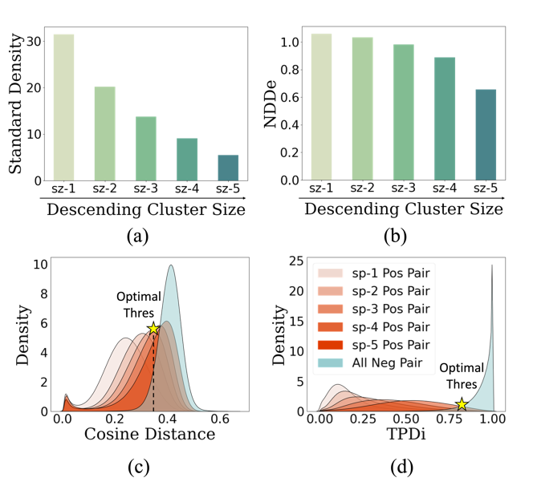
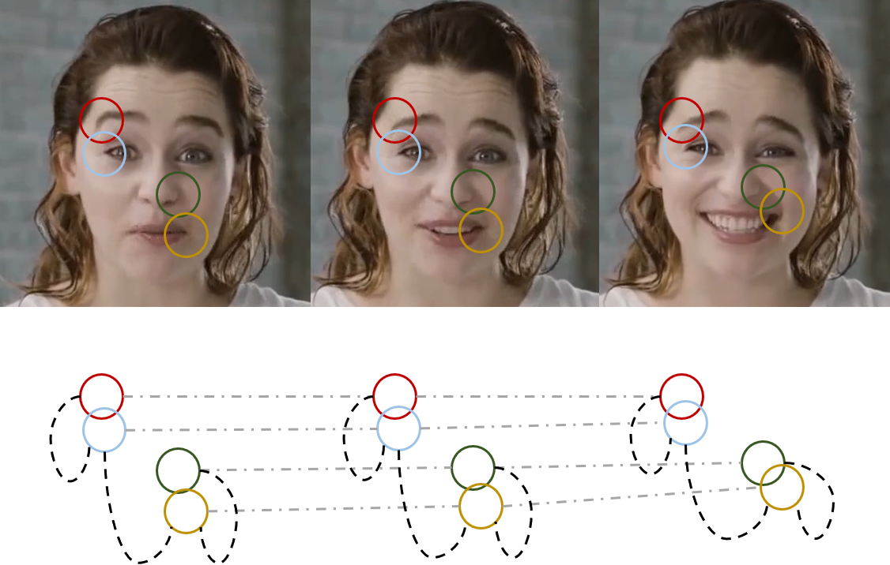

|
Yingjie Chen I am an AI Researcher at Alibaba TongYi Lab. I graduated with Ph.D. degree in the school of Computer Science from Peking University in 2024 and B.S. degree from Peking University in 2019. My research focuses on Computer Vision and Affective Computing. At Alibaba, I'm working on generative AI models, especially cotrollable video generation. We are now recruiting for Summer Internships, and positions for Research Interns (RI) are continuously open for applications. Welcome to contact me with your CV and research statement! |
{kind=link}
Publications (* denotes equal contribution) |

|
Trend-Aware Supervision: On Learning Invariance for Semi-supervised Facial Action Unit Intensity Estimation
Yingjie Chen*, Jiarui Zhang*, Tao Wang, Yun Liang ECCV, 2022 arXiv / code We inspect the keyframe-based semi-supervised AU intensity estimation problem and identify the spurious correlation problem as the main challenge. To this end, we propose Trend-Aware Supervision to raise intra-trend and inter-trend awareness during training to learn invariant AU-specifc features. |
|

|
On Mitigating Hard Clusters for Face Clustering
Yingjie Chen*, Huasong Zhong*, Chong Chen, Chen Shen, Jianqiang Huang, Tao Wang, Yun Liang, Qianru Sun ECCV, 2022 (Oral Presentation, Top 2.3%) arXiv / code We inspect face clustering problem and find existing methods failed to identify hard clusters—yielding significantly low recall for small or sparse clusters. To mitigate the issue of small clusters, we introduce NDDe based on the diffusion of neighborhood densities. |
|
|
Pursuing Knowledge Consistency: Supervised Hierarchical contrastive Learning for Facial Action Unit Recognition
Yingjie Chen, Diqi Chen, Tao Wang, Yizhou Wang, Yun Liang, ACM MM, 2022 arXiv / code We observe that there are three kinds of inherent relations among AUs, which can be treated as strong prior knowledge, and pursuing the consistency of such knowledge is the key to learning subject-consistent representations. To this end, we propose a supervised hierarchical contrastive learning method (SupHCL) for AU recognition to pursue knowledge consistency among different facial images and different AUs. |
|
|
On Mitigating Hard Clusters for Face Clustering
Yingjie Chen, Diqi Chen, Tao Wang, Yizhou Wang, Yun Liang, AAAI, 2022 (Oral Presentation) arXiv / code We formulate subject variant problem in AU recognition using an AU causal diagram to explain the whys and wherefores. Based on our causal diagram, we propose a plug-in causal intervention module, CIS, which could be inserted into advanced AU recognition models for removing the effect caused by confounder Subject. |
|

|
CaFGraph: Context-aware Facial Multi-graph Representation for Facial Action Unit Recognition
Yingjie Chen, Diqi Chen, Yizhou Wang, Tao Wang, Yun Liang, ACM MM, 2021 (Oral Presentation) arXiv / code Considering that context is essential to resolve ambiguity in human visual system, modeling context within or among facial images emerges as a promising approach for AU recognition task. To this end, we propose CaFGraph, a novel context-aware facial multi-graph that can model both morphological & muscular-based region-level local context and region-level temporal context. |

|
Cross-Modal Representation Learning for Lightweight and Accurate Facial Action Unit Detection
Yingjie Chen, Han Wu, Tao Wang, Yizhou Wang, Yun Liang, IEEE Robotics Autom. Lett. 2021 arXiv / code The dynamic process of facial muscle movement, as the core feature of AU, is yet ignored and rarely exploited by prior studies. Based on such observation, we propose Flow Supervised Module (FSM) to explicitly capture the dynamic facial movement in the form of Flow and use the learned Flow to provide supervision signals for the detection model during the training stage effectively and efficiently. |
Awards |
|
UBIQuant Scholarship, PKU, 2023
Peking University President Scholarship, 2022 PKU Triple-A Student Pacesetter Award, 2021 Outstanding Graduates, Beijing, 2019 Outstanding Graduates, PKU, 2019 Top 10 Excellent Graduation Thesis, 2019 PKU Triple-A Student Award, 2018/2017/2016 National Scholarship, 2018 Scholarship of Kwang-Hua Education Foundation, 2017 Scholarship of Tianchuang, 2016 |
Experiences |
|
Researcher at TongYi Lab, Alibaba Group
Jul. 2024 - Present
Doctor's Degree, Peking University, Beijing, China Sep. 2019 - Jul. 2024 Bachelor's Degree, Peking University, Beijing, China Sep. 2015 - Jun. 2019 |
Contact Me |
| Email: chenyingjie@pku.edu.cn |
|
This page template is borrowed from ✩. |